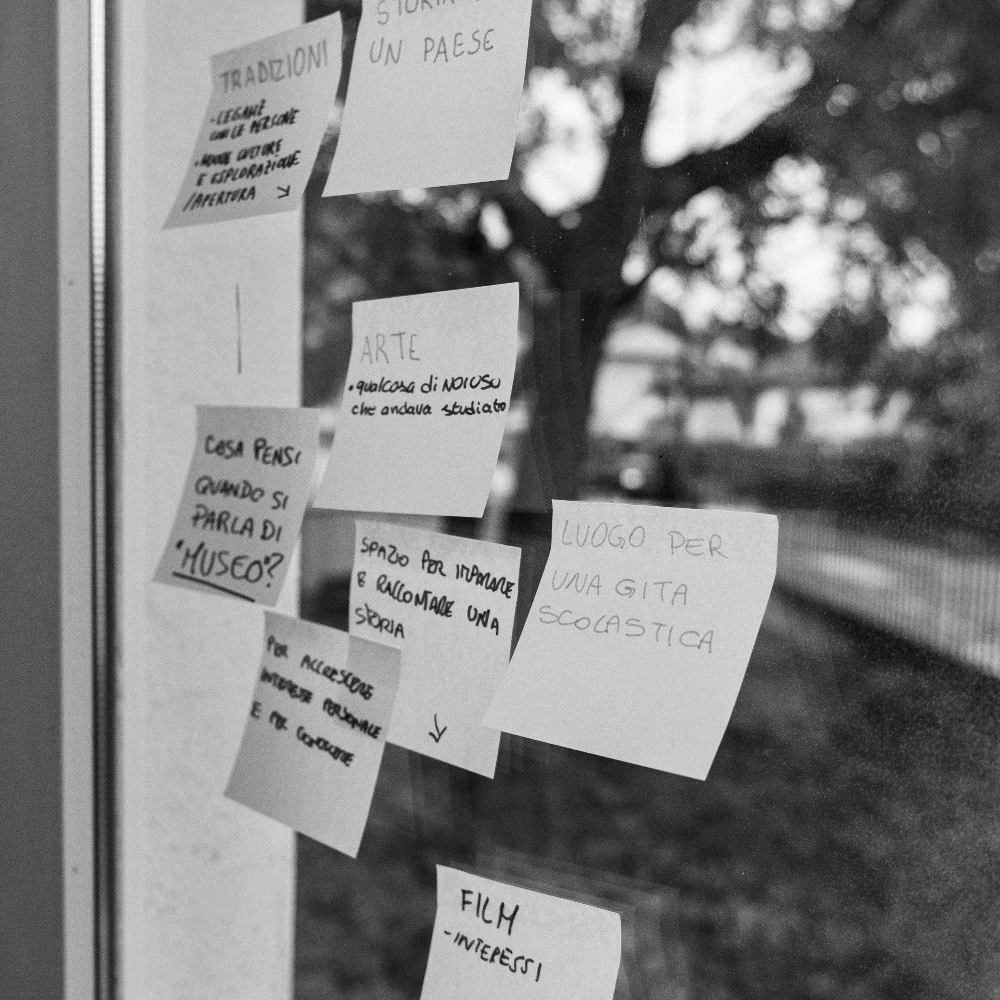
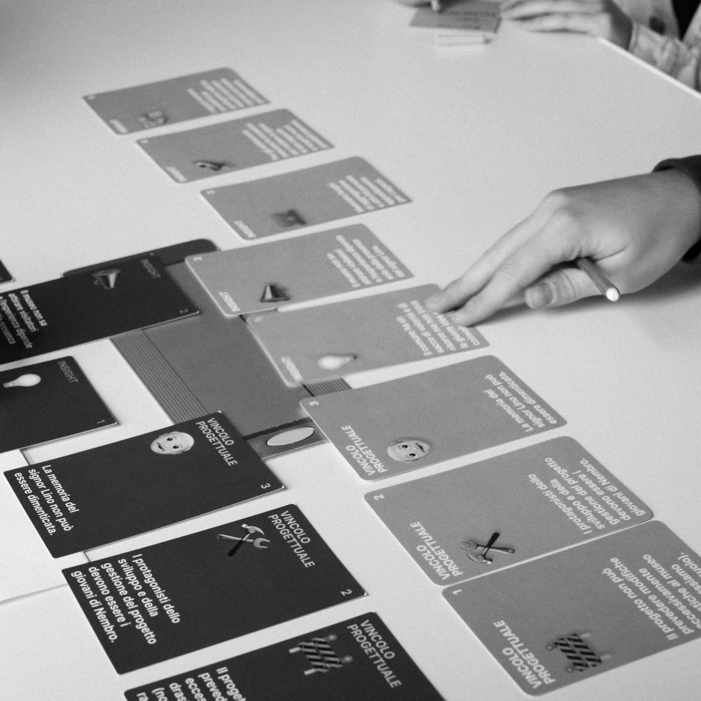
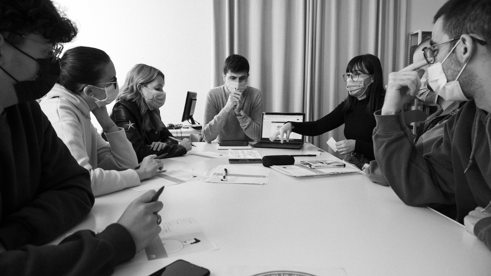
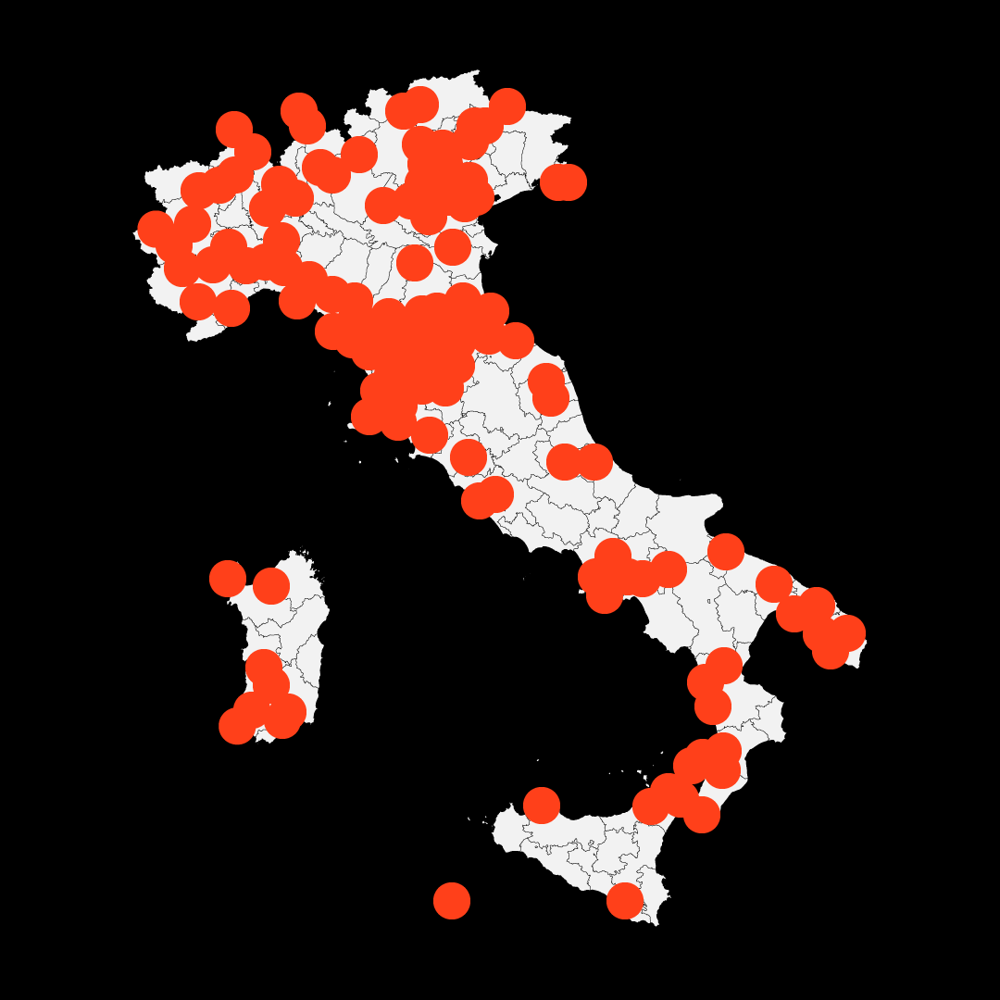
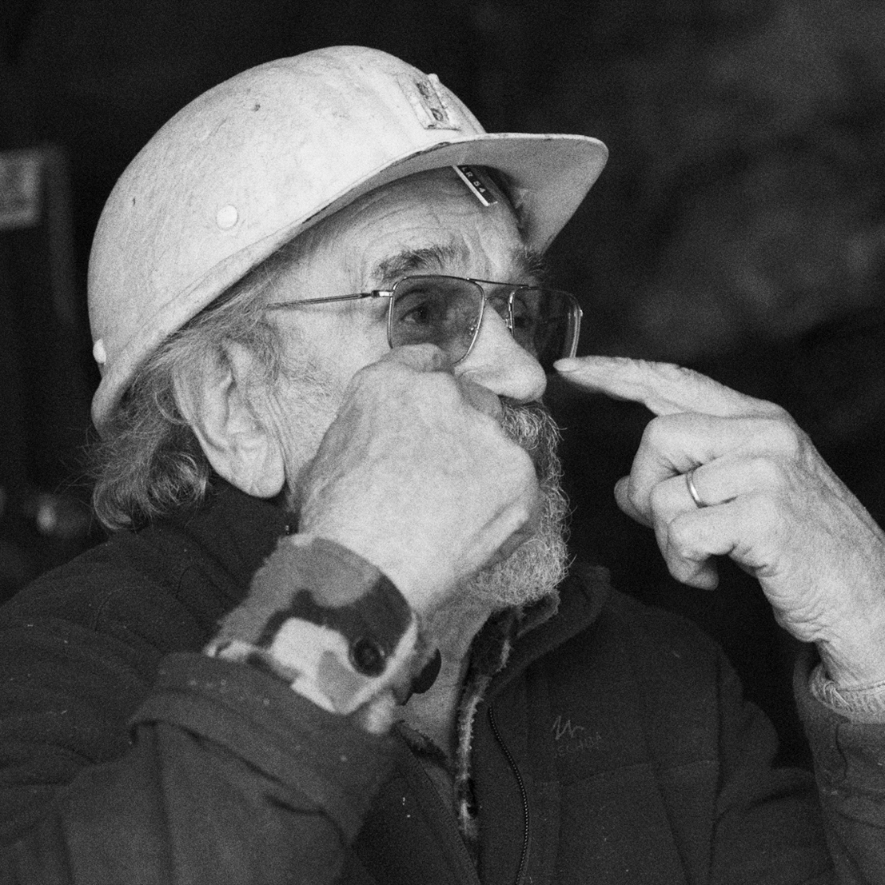
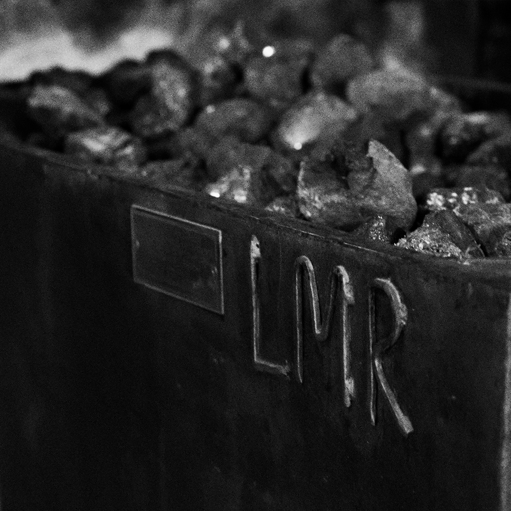
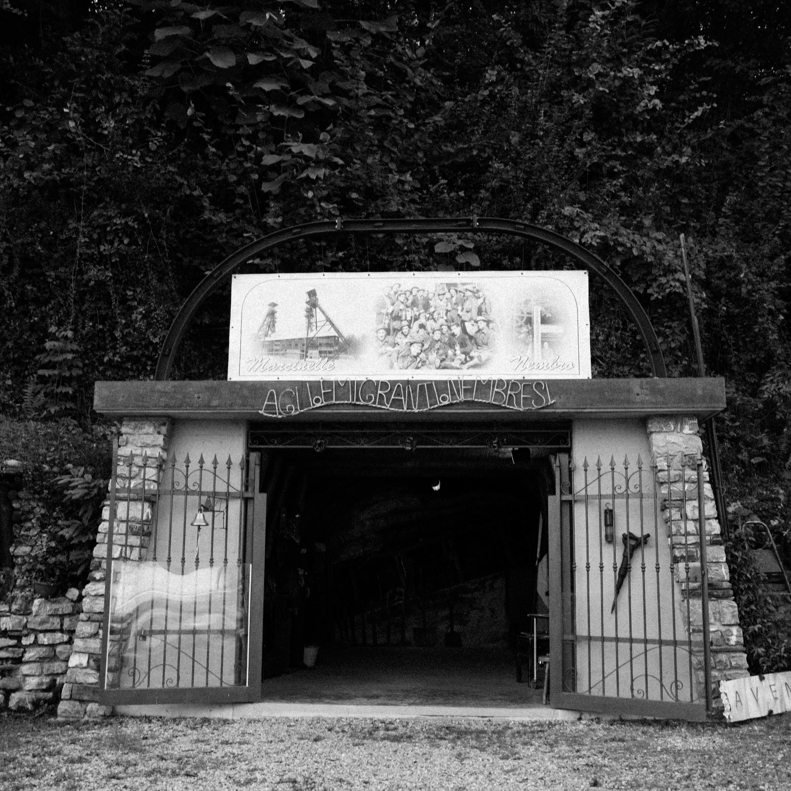
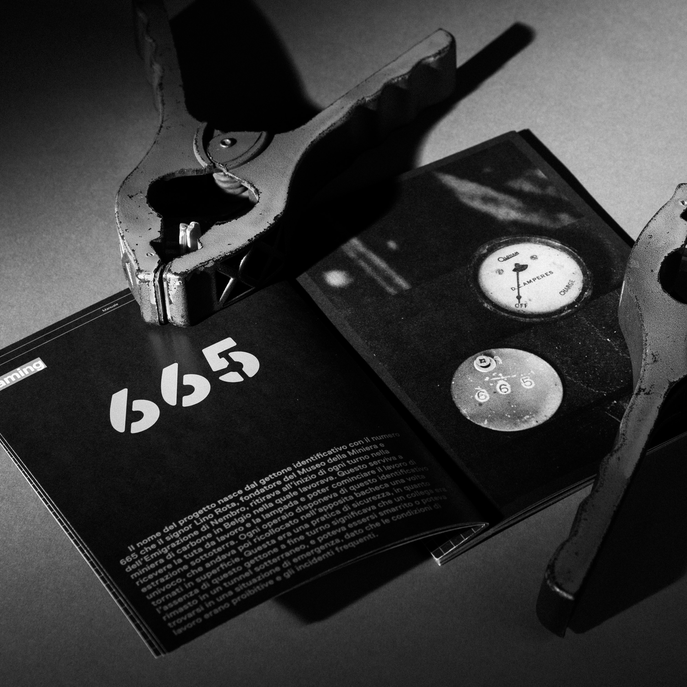
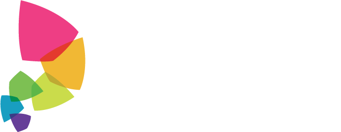

La sensibilità di un designer non può essere imbottigliata.
Scopri come puoi fare davvero la differenza nella società
Scopri di più ↘
il design è trasformazione
Il design abilita la trasformazione, attivando delle relazioni sociali costruttive e quindi pratiche sociali più consapevoli, e trasferendo il proprio mindset progettuale
↑ Attività di co-design degli adolescenti di Nembro con i designer del corso di Sintesi Finale C2 del Politecnico di Milano
Cards realizzate nelle fasi di ideazione per formulare una proposta di progetto →


Il design é una pratica culturale che getta le basi di una relazione costruttiva, dalla quale sviluppare nuovi punti di vista e quindi pratiche sociali più consapevoli. Inoltre, il designer è abilitatore naturale della trasformazione, perché sa orientare le proprie competenze all’interno di un processo che guarda strettamente alle persone, e quindi sa restituire le proprie funzionalità strumentali alle cause umanistiche e sociali. Lo stesso processo educa l’ambiente in cui si inserisce, che assorbe l’abito progettuale e quindi acquisisce una certa autonomia trasformativa.
← Attività di brainstorming in cui i ragazzi di Nembro raccontano il loro legame con il territorio e con il Museo della Miniera e dell’Emigrazione
Il design in grado di finalizzare le proprie competenze anche in ambito di trasformazione sociale, come nella valorizzazione del territorio. La realtà dei piccoli musei italiani è un caso che ne può beneficiare particolarmente


In Italia ci sono 4.889 musei, gallerie o collezioni. Il 41,3% di questi ha meno di 1000 visitatori annui e sono situati generalmente in piccole località. Il patrimonio museale italiano è peculiare e costituito da un numero elevato di piccoli musei diffusi capillarmente.
fonte: Rilevazione Istat del 2017, pubblicata il 29 gennaio 2019
Mappa dei piccoli musei in Italia, da piccolimusei.com
il contesto
La realtà dei piccoli musei è consolidata e dinamica, ed è diffusa visibilmente nel territorio
un valore nascosto
Questi piccoli musei hanno un legame forte col territorio che li custodisce, perché esprimono il valore della storia di quel territorio. Una storia a cui la comunità può guardare per comprendersi come parte di essa, e sviluppare la propria identità collettiva
Lino Rota racconta le esperienze della sua vita che l’hanno portato a fondare ill Museo della Miniera e dell’Emigrazione di Nembro (BG) →


La valorizzazione dei piccoli musei locali consente alla comunità di accedere alla storia del proprio territorio e fortificare il senso di appartenenza. Queste piccole realtà museali affrontano però una sfida complessa: devono capire come rivolgersi in modo efficace anche alla nuova generazione. La generazione in riferimento vive una serie di esigenze identitarie peculiari e che la contraddistinguono, e che meritano una specifica profondità d’analisi. Il caso studio proposto in seguito è un esempio virtuoso di come un piccolo museo possa interpretare questa esigenze, senza rinunciare alla propria identità peculiare.
← Carrello della miniera di carbone di Marcinelle, in Belgio, esposto nel Museo della Miniera e dell’Emigrazione di Nembro (BG)
Il caso studio di Nembro
Il caso studio documenta l’attività di co-design svolta per ripensare il ruolo, gli spazi e i servizi del Museo della Miniera e dell’Emigrazione del Comune di Nembro (BG) per favorire un nuovo protagonismo giovanile
L’esterno del Museo della Miniera e dell’Emigrazione di Nembro (BG) →


L’attività nasce dalla collaborazione tra il Progetto Grafite dell’Associazione Rapsoidea e il Laboratorio di Sintesi Finale C2 di Design della Comunicazione Magistrale del Politecnico di Milano, un progetto che vede come obiettivo la connessione tra i giovani e il territorio. Il co-design è una pratica attraverso la quale il progettista abilita le figure a cui è rivolto il servizio in corso di progettazione, permettendo loro di esprimere in prima persona il loro punto di vista e la loro sensibilità, attraverso la trasmissione delle proprie competenze e del mindset progettuale.
← Manuale del Progetto/665, una proposta nata dal co-design tra gli studenti del Politecnico di Milano e adolescenti di Nembro, per coinvolgere i giovani nembresi nelle attività del Museo della Miniera
Ti piacerebbe lavorare in un progetto di Design trasformativo?Lasciaci un tuo contatto!

IMAGIS LAB Dipartimento di Design | Scuola del Design Politecnico di Milano Via Durando 38/A, 20158 Milano